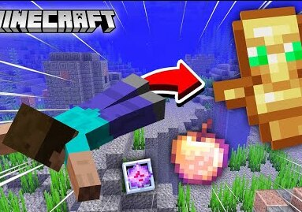

Minecraft But, Swimming Drops OP Items

Minecraft PE mods have been around for a long time and have come a long way since their starting days. There are currently tons of different and unique mods for Minecraft players to choose from. This list is filled with mods available to download for the Pocket Edition of Minecraft.
Here I'm going to provide one of the most popular Minecraft But, Swimming Drops OP Items mod for your Minecraft game. This add on for Minecraft gives you OP items when you swim to troll your friends or you can create a survival world with the mod. You can do many things you want with this mod.
Minecraft But, Swimming Drops OP Items Mod
Follow the process mentioned below to download and install the Mod in your Minecraft Pocket Edition.-
First download the mod from here
After downloading, Click the extracted file once. Your Minecraft will be opened automatically.
NOW ENJOY :)